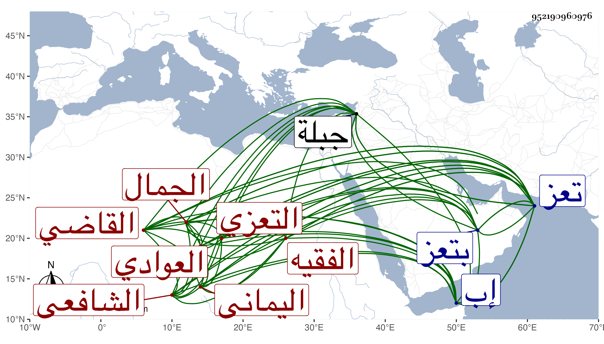

0902Sakhawi.DawLamic.ITO20230111-ara1.EIS1600.952190960976
Biography ID: 952190960976
673
محمد بن عمر بن عبد الله الجمال العوادي بفتح العين والواو الخفيفة نسبة لقرية تحت جبل بعدان العواجي بالفتح أيضا التعزي اليماني الشافعي الفقيه القاضي . ولد في قريته سنة خمس وخمسين وسبعمائة وقرأ القرآن على أهلها ثم في إب ثم قدم جبلة فقرأ على عالمها ابن الخياط وبه استفاد ثم نزل تعز إلى الفقيه محمد بن عبد الله الريمي فقرأ عليه التنبيه والمهذب والوجيز والوسيط وحصلها بيده وعلق عليها وحققها ودرس في زمنه وأفتى باختياره وأذنه وأضاف إليه المنصورية وأخذ كتب الحديث جميعها وشروحها عن محمد بن ضفر وحصل كتبا كثيرة ، وولاه الناصر قضاء تعز فلم يقتصر عليه بل كان يقضي أحيانا ويدرس أحيانا ويشتغل على الشيوخ أحيانا ، ثم استعفى واقتصر على التدريس ونشر العلم إلى أن أضيفت له المدرسة الظاهرية الكبرى وكذا درس بمدرسة سلامة ابنة المجاهد ، ولم يلبث أن مات بتعز في ربيع الأول سنة ست عشرة . وكان متواضعا كثير الطلب . أفاده النفيس العلوي . وذكره شيخنا في إنبائه فقال اشتغل ببلده تعز وشغل الناس كثيرا واشتهر وأفتى ودرس ونفع الناس وكثرت تلامذته ثم ولي القضاء ببلده فباشر بشهامة وترك مراعاة أهل الدولة فتعصبوا عليه حتى عزل وأقبل على الأشغال والنفع للناس حتى مات وقد أراق في مباشرته الخمور وأزال المنكرات وألزم اليهود بتغيير عمائمهم رحمه الله .
